「Natural Disaster Viewer」はベータ版です。
多少の不具合が存在する場合がありますが、ご了承ください。
［お知らせ］現在緊急地震速報のテスト受信がご利用いただけない場合があります。
こちらはデスクトップPC版「Google Chrome」アプリの 拡張機能です。
自然災害の情報を確認・配信用に表示できるティッカーです。
必ず下記の「注意事項」を読んでからダウンロードしてください。
動作要件：Chrome & Edge 93 以降
最新版をダウンロード（ベータ版 β0.5.1）
機能
通常のティッカーとして
緊急地震速報
地震情報
気象速報
津波情報
河川情報
アメダス情報
情報読み上げ機能（専用ソフト不要）
ウェザーニュースのMスケールを自動反映
BGM再生機能
どうやって追加するの？
まず、上のリンクからzipファイルをダウンロードします。
（動画はGoogle Drive経由でダウンロードした場合の実例です。）
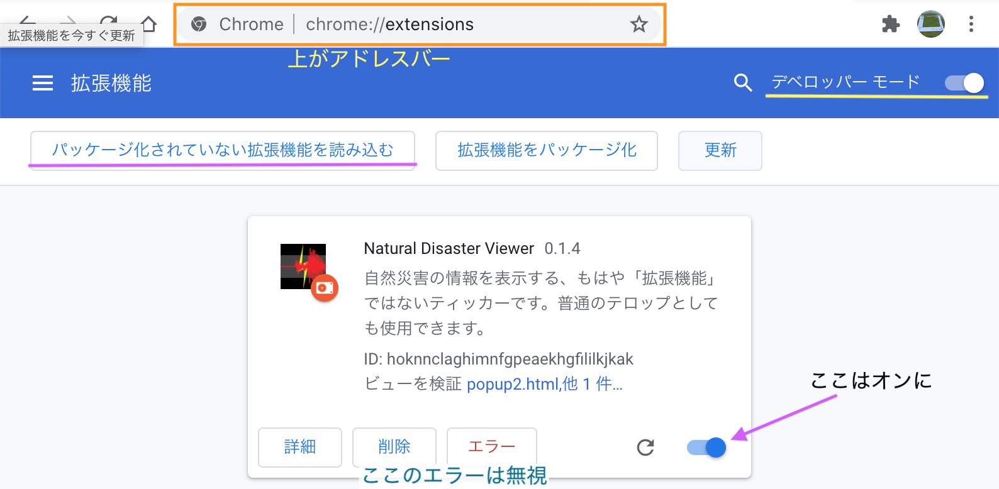
そして、アドレスバー(URL)に「chrome://extensions/」と入力し、拡張機能の管理画面を出します。
拡張機能の一覧が出てくるので、そこで「デベロッパーモード」をオンにして、
拡張機能が入っているフォルダーを拡張機能のタブにドラッグ＆ドロップして追加してください。
アドレスバーの右にある、拡張機能の一覧にある「Natural Disaster Viewer」アイコンをクリックして起動です！
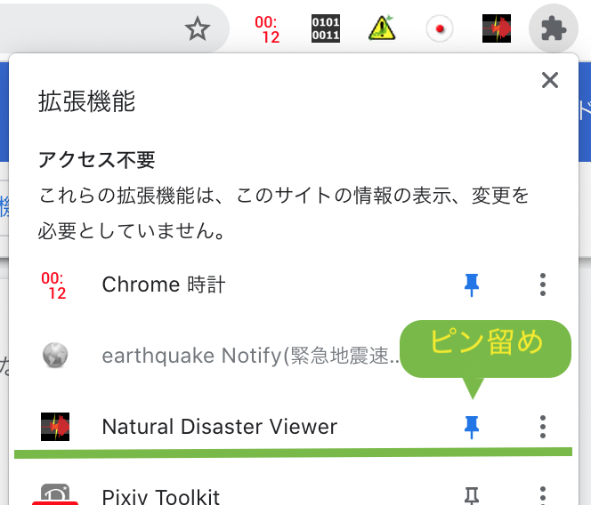
どうやって更新するの？
ファイルをダウンロード・解凍をし、フォルダーに上書き保存をします。
アドレスバーに「chrome://extensions/」と入力し、拡張機能の管理画面を出します。
「更新」をクリックで完了！
紹介動画（仮）
「通常」モードのメッセージ書式
特殊な入力をすることで、データを表示することができます。
| 最高気温（ランキング） | <weather/temperature/high>
|
| 最低気温（ランキング） | <weather/temperature/low>
|
| １時間降水量（ランキング） | <weather/rain_rank/1h>
|
| ２４時間降水量（ランキング） | <weather/rain_rank/1d>
|
| 風速（ランキング） | <weather/wind_rank>
|
| 実況気温 | <weather/temperature/current>
|
| 過去１０分の降水量 | <weather/rain/10m>
|
| 過去１時間の降水量 | <weather/rain/1h>
|
| 過去３時間の降水量 | <weather/rain/3h>
|
| 過去２４時間の降水量 | <weather/rain/24h>
|
| 現在の湿度 | <weather/humidity>
|
| 現在の風速 | <weather/wind>
|
| 現在の日照時間 | <weather/sun1h>
|
| 現在の積雪高さ | <weather/snow/height>
|
| 過去１時間の降雪量 | <weather/snow/1h>
|
| 過去６時間の降雪量 | <weather/snow/6h>
|
| 過去１２時間の降雪量 | <weather/snow/12h>
|
| 過去２４時間の降雪量 | <weather/snow/24h>
|
| 現在の気圧 | <weather/pressure>
|
| 気象警報・注意報 | <weather/warn>
|
| 河川情報 | <weather/river>
|
| 現在の風速 | <weather/wind>
|
| 避難情報 | <bousai/evacuation>
|
| ＷＮＩライブ配信番組表 | <weathernews/live/timetable>
|
注意事項
開発環境がMacBookなのでWindowsですと表示が崩れる恐れがあります。
効果音は全てオリジナルのものを使用しています。無断で関係のないプログラムや動画などに使用しないでください。
【重要】
現状は緊急地震速報の表示条件は設定しても効果はありません。
過度なアクセスを行わない程度に情報の取得間隔を設定し、なるべく矢印キーを使って調整してください。
効果音の二次配布は許可されていません。
DoS攻撃などへの悪用はおやめください。
【使用上の注意】
ベータ版なので、致命的な不具合が発生する恐れがあります。特に、トラフィックモニターに注意してください。（気づかないうちにDoS攻撃になっている恐れがあるため）
過度なアクセスが認められる場合には、使用を中止し製作者にご連絡ください。
このティッカーは、起動時に使用中のバージョンの情報をサーバーに送信します。ご了承の上ダウンロードを行ってください。
アイコンに使用されている地震波はイメージです。実際のものではありません。
なにかご不明な点がありましたら、
Twitterからお知らせください。
このホームページはユーザーへの告知なく変更する場合があります。
重要な変更がある場合には、ティッカー起動時にポップアップ表示でお知らせをいたします。
MacBookでの動作例（右にスクロール）
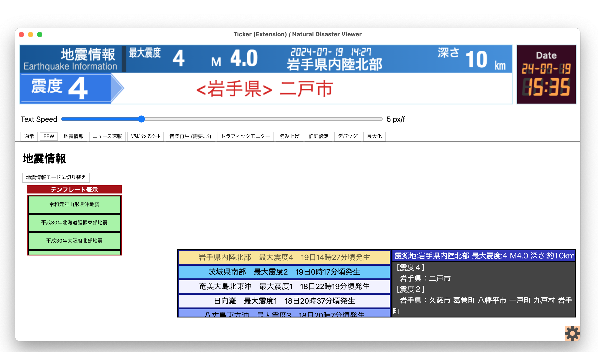
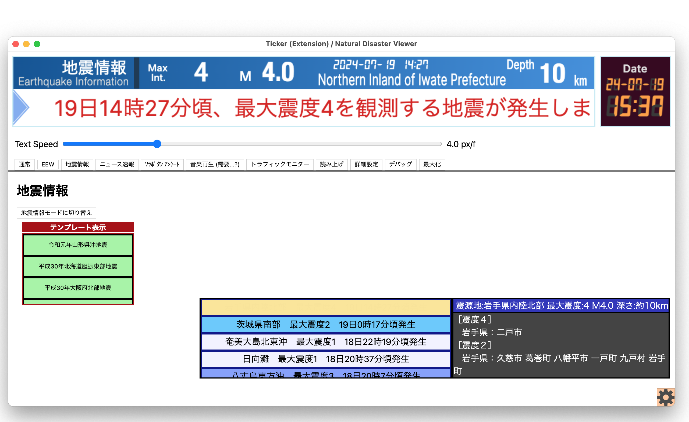
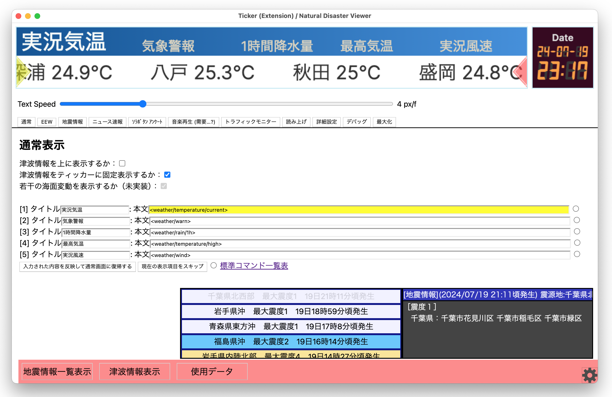
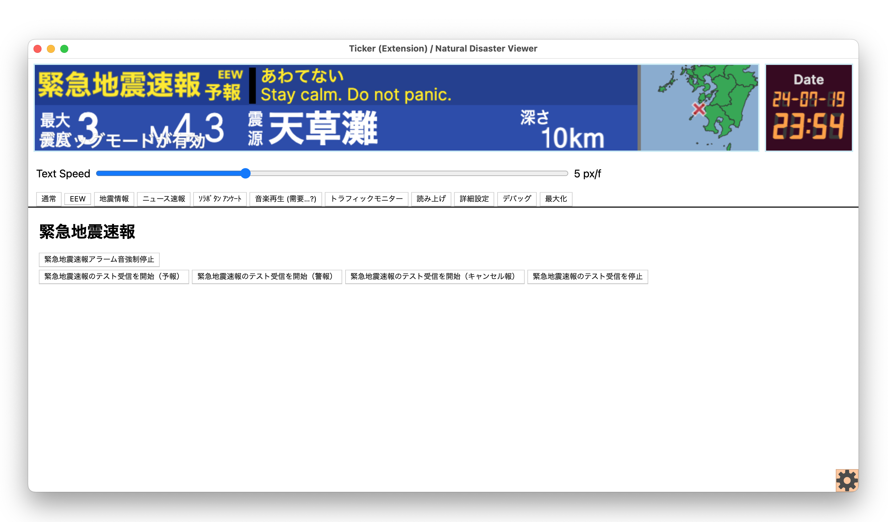
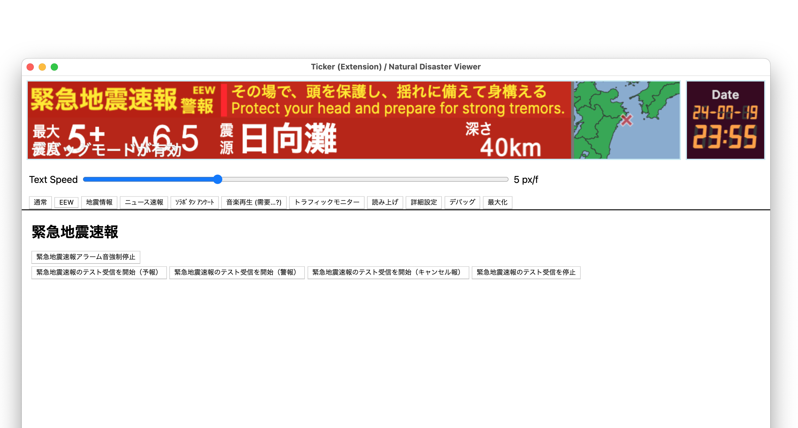
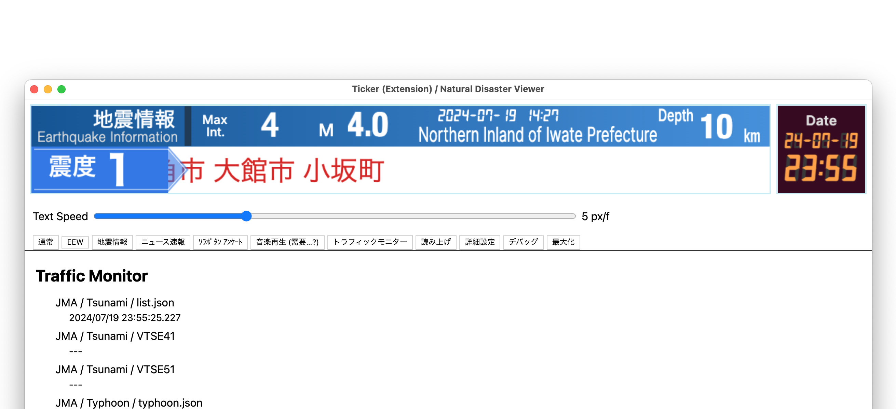
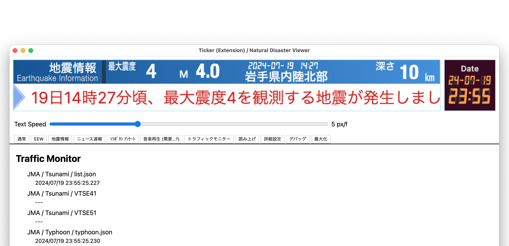
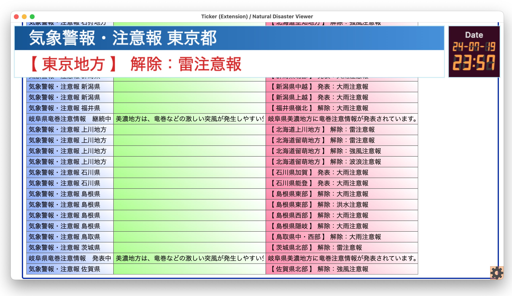
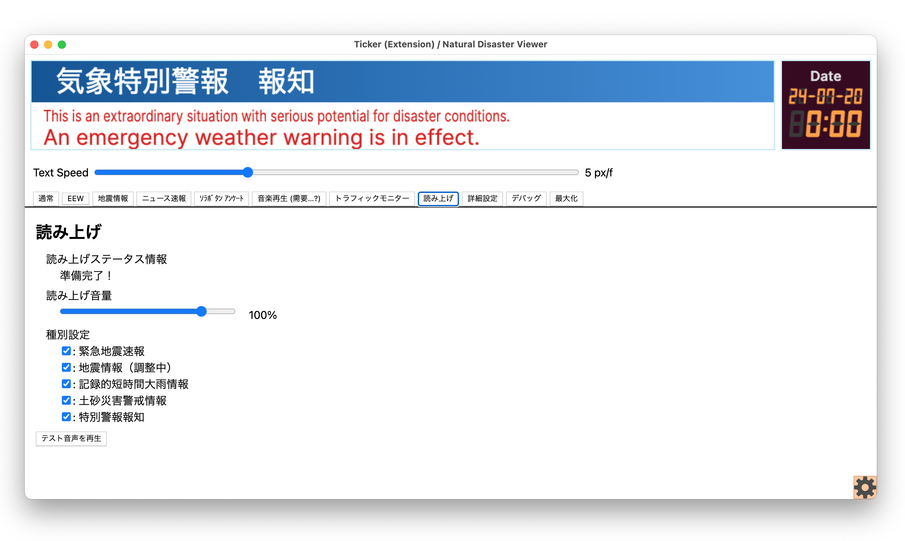

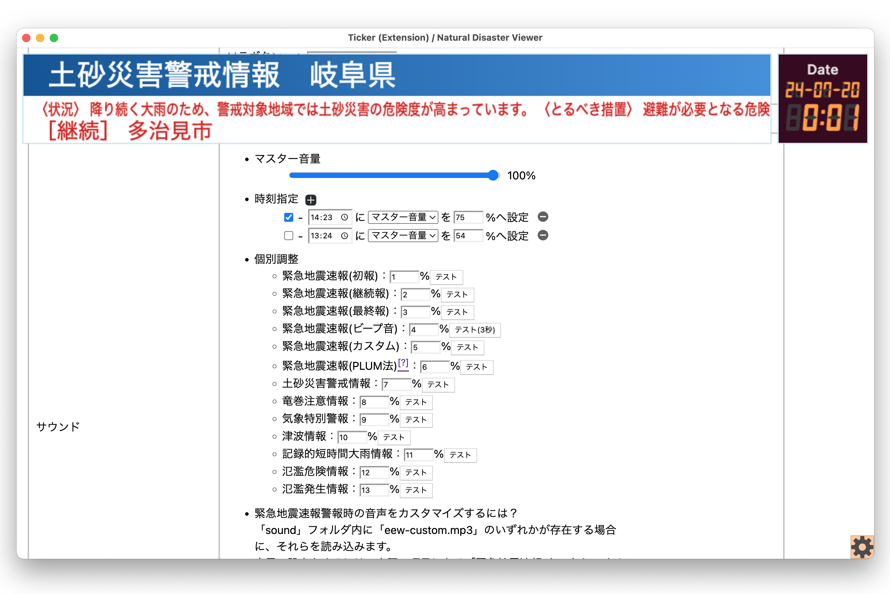
今後の展望
- 台風情報
- 避難情報
- 鉄道情報
- フォント変更機能
- 気象情報履歴表示機能
- 噴火速報の表示
- 選択中の地震情報がどこかわかるやつ
- 表示する項目数の増減を可能に
- アプリケーション化(.exe)
- 気象警報が長すぎて潰れる問題を修正
- 緊急地震速報取得元を増やしてサーバーの負荷軽減
- 設定と本体のウィンドウを分ける
作者からのお知らせ
本当に自分が使うか判断して決めてください
重くなりそうだったら無理せず使用を中止しましょう！
These programs are made by look Sky.
最終更新 2024/08/28 22:21
無料サーバーを使っているので広告が出ます。ご了承ください。